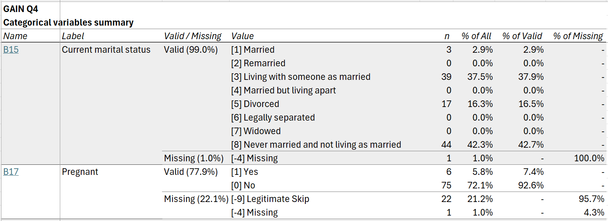

Introduction to lighthouse.codebook
Source:vignettes/lighthouse-codebook.Rmd
lighthouse-codebook.RmdCreating codebooks
Creating a codebook involves two general steps:
Create a “codebook” object in R from a data frame (and, optionally, metadata), using
cb_create()or a specialized variant (such ascb_create_spss()orcb_create_redcap()).Write the codebook to disk using
cb_write().
library(lighthouse.codebook)
# create and write a codebook without metadata
dat |>
cb_create() |>
cb_write("cb.xlsx")
# with metadata
dat |>
cb_create(metadata = dat1_metadata) |>
cb_write("cb.xlsx")
# from SPSS data
dat_spss <- haven::read_sav("dat_spss.sav", user_na = TRUE)
dat_spss |>
cb_create_spss() |>
cb_write("cb_spss.xlsx")
# from REDCap data
dat_rc <- REDCapR::redcap_read(redcap_uri = rc_uri, token = rc_token)
meta_rc <- REDCapR::redcap_metadata_read(redcap_uri = rc_uri, token = rc_token)
dat_rc$data |>
cb_create_redcap(metadata = meta_rc$data) |>
cb_write("cb_rc.xlsx")Codebook contents
The codebook written to disk will include an overview tab listing all variables in the dataset; summary tabs for numeric, categorical, and text variables; and, if grouping variables are specified, grouped summary tabs for numeric and categorical variables.
The overview tab includes one row for each variable in the dataset, with information on variable types, labels, values, and missingness. By default, each variable is hyperlinked to its location on the relevant summary tab.

The numeric summary tab includes descriptive statistics for all numeric variables in the dataset:

The categorical summary tab includes frequencies for all categorical variables, optionally with separate rows for user missing values:

Finally, the text summary tab includes frequencies for the
most common values for all text variables in the dataset. (The number of
values shown can be adjusted using the n_text_vals argument
to cb_write().)

If group_by is specified in cb_write(),
additional numeric and categorical summary tabs grouped by the specified
variables will be included.
Customizing codebooks
There are many options for controlling how data is interpreted,
summarized, and presented. This section shows a few of the most useful
options. Further options are detailed in the documentation for
cb_create() and cb_write().
Grouped summaries
Numeric and categorical data summaries can be grouped by one or more
variables by specifying them in the group_by argument to
cb_write().
cb_create(data, metadata) |>
cb_write("cb.xlsx", group_by = treatment_group)
cb_create(data, metadata) |>
cb_write("cb.xlsx", group_by = c(treatment_group, timepoint, age_group))By default, values for each subgroup are shown in separate columns,
with decked heads if more than one grouping variable is specified.
However, some or all grouping variables can instead be shown in rows
using the group_rows argument.
# show `treatment_group` in columns and `timepoint` in rows
cb_create(data, metadata) |>
cb_write(
"cb.xlsx",
group_by = c(treatment_group, timepoint),
group_rows = timepoint
)Different row grouping behavior can be specified for numeric versus
categorical summary tabs using the group_rows_numeric and
group_rows_categorical arguments.
# for numeric summary, show `treatment_group` in columns and `timepoint` in rows;
# for categorical summary, show all grouping variables in columns
cb_create(data, metadata) |>
cb_write(
"cb.xlsx",
group_by = c(treatment_group, timepoint),
group_rows_numeric = timepoint
)
# for numeric summary, show all grouping variables in rows;
# for categorical summary, show `treatment_group` in rows
cb_create(data, metadata) |>
cb_write(
"cb.xlsx",
group_by = c(treatment_group, timepoint),
group_rows_numeric = c(treatment_group, timepoint),
group_rows_categorical = treatment_group
)User missing values
User missing values (also known as nonresponse codes, reserve codes,
or special values) can be specified using the .user_missing
argument to cb_create(). Missing values are specified using
a formula or list of formulas, with variables on the left-hand side (as
names or tidyselect
expressions) and values on the right-hand side. If the left-hand side is
empty, user missings will be set for all compatible variables in the
dataset.
# set a single missing value for a single variable
cb <- cb_create(data, metadata, .user_missing = var1 ~ 99)
# for variables `var1` through `var5`
cb <- cb_create(data, metadata, .user_missing = var1:var5 ~ c(98, 99))
# for all numeric variables, plus `var6` and `var7`
cb <- cb_create(
data,
metadata,
.user_missing = c(where(is.numeric), var6, var7) ~ c(-9, -8, -7)
)
# for all compatible variables in dataset
cb <- cb_create(data, metadata, .user_missing = ~ c(98, 99))If the user missing values are named, the names will be treated as value labels in data summaries.
cb <- cb_create(
data,
metadata,
.user_missing = var1:var5 ~ c("Declined" = 98, "Not applicable" = 99)
)To apply different user missings for different variables, pass a list of formulas.
Missing value handling
On numeric summary tabs, missing values (including both user missing
values and NA) are dropped for computation of summary
statistics.
On ungrouped categorical and text summary tabs, by default, user
missing values are individually tabulated. For example, if
.user_missing = ~ c("Declined" = 98, "Not applicable" = 99),
then categorical and text summary tabs will include rows giving counts
for "[98] Declined" and "[99] Not applicable".
All user missing values and NA can instead be collapsed
into a single "(Missing)" row using the
detail_missing argument to cb_write().
dat |>
cb_create(.user_missing = ~ ~ c("Declined" = 98, "Not applicable" = 99)) |>
cb_write("cb.xlsx", detail_missing = FALSE)Finally, user missing values are always collapsed (as though
detail_missing = FALSE) on grouped summary
tabs.
Splitting long variable labels
Variable labels for sets of related variables sometimes share a
common prefix. Using the .split_var_labels argument to
cb_create(), this prefix can be extracted into a separate
column, making it easier to see at a glance what is unique about each
variable.
For example, given a set of variable labels that all begin with
"What colors do you like? Select all that apply: ":
| Name | Label |
|---|---|
| age | How old are you today? |
| colors1 | What colors do you like? Select all that apply: Red |
| colors2 | What colors do you like? Select all that apply: Green |
| colors3 | What colors do you like? Select all that apply: Blue |
| colors4 | What colors do you like? Select all that apply: Orange |
| height | What is your height in inches? |
You can split the labels for these variables, specifying them using a tidyselect expression:
| Name | Label Stem | Label |
|---|---|---|
| age | How old are you today? | |
| colors1 | What colors do you like? Select all that apply: | Red |
| colors2 | What colors do you like? Select all that apply: | Green |
| colors3 | What colors do you like? Select all that apply: | Blue |
| colors4 | What colors do you like? Select all that apply: | Orange |
| height | What is your height in inches? |
Multiple sets of variables with common prefixes can be specified by passing a list of tidyselect expressions.
Variable typing
Data summaries are produced for “numeric,” “categorical,” and “text”
variables. For a given variable x, * x is
treated as categorical if (1) it is a factor, ordered factor, or logical
vector, or (2) it has associated value labels other than
missing value codes (specified in metadata or, for SPSS data, in a
"haven_labelled" vector). * x is treated as
numeric if (1) it is numeric (i.e., is.numeric(x) is
TRUE) and (2) it has no associated value labels
other than missing value codes. * x is treated as text if
(1) it is a character vector and (2) it has no associated value
labels other than missing value codes.
Thus, you can change how a variable is summarized by changing its class. For instance, to get complete frequencies for a numeric or character variable, convert it to a factor; to get only the top frequencies for a factor with many levels, convert it to character.
Variables of other classes, such as dates, datetimes, and lists, are not currently included on summary tabs. Summaries for dates and datetimes are planned for a future release.
Other uses for the codebook object
The "lighthouse_codebook" object created by
cb_create() will most commonly be used to write an Excel
codebook to disk using cb_write(). However, it can also be
used to create other objects in R.
# example data
q4_subset <- gain_q4 |>
subset(select = c(XPID, XOBS, XRA, B17, SU4a, SU4b, SU1f99v))
# create codebook
cb <- cb_create(
q4_subset,
metadata = q4_metadata,
.user_missing = ~ c("Not Asked" = -3,
"Missing" = -4,
"Confidential" = -6,
"Refused" = -7,
"Don't Know" = -8,
"Legitimate Skip" = -9)
)
cb
# # A tibble: 7 × 6
# name type label values user_missings missing
# <chr> <chr> <chr> <chr> <chr> <dbl>
# 1 XPID text Participant ID NA [-9] Legitim… 0
# 2 XOBS categorical Observation Wave [0] I… [-9] Legitim… 0
# 3 XRA categorical Random assignment [0] C… [-9] Legitim… 0
# 4 B17 categorical Pregnant [0] N… [-9] Legitim… 0.221
# 5 SU4a numeric PPS - P90 days alcohol use NA [-9] Legitim… 0.394
# 6 SU4b numeric PPS - P90 days drunk or 5+ d… NA [-9] Legitim… 0.442
# 7 SU1f99v text QCS - P90 Days Other AOD Tx … NA [-9] Legitim… 0.923Extract transformed data
Use cb_get_data() to extract transformed data based in
several formats. format = "factors" yields a dataset with
all variables with value labels converted to factors and user missings
converted to NA.
cb_get_data(cb, format = "factors")
# # A tibble: 104 × 7
# XPID XOBS XRA B17 SU4a SU4b SU1f99v
# <chr> <fct> <fct> <fct> <dbl> <dbl> <chr>
# 1 001 Intake Treatment No NA NA NA
# 2 002 Intake Control No 10 4 NA
# 3 003 Intake Treatment No 10 1 Peer counselor
# 4 003 3-month Treatment No 39 15 NA
# 5 003 6-month Treatment No NA NA NA
# 6 004 Intake Control No 10 2 NA
# 7 004 3-month Control No 55 63 NA
# 8 004 6-month Control No 10 1 NA
# 9 005 Intake Control Yes 35 0 Social worker
# 10 005 3-month Control Yes 55 39 NA
# # ℹ 94 more rowsWhereas format = "haven" yields a dataset with
SPSS-style variable labels, value labels, and user missings encoded
using the "haven_labelled_spss" class.
cb_get_data(cb, format = "haven")
# # A tibble: 104 × 7
# XPID XOBS XRA B17 SU4a SU4b SU1f99v
# <chr+lbl> <dbl+lbl> <dbl+lbl> <dbl+lbl> <dbl+lbl> <dbl+lbl> <chr+lbl>
# 1 001 0 [Intake] 1 [Treatment] 0 [No] -9 (NA) -9 (NA) -9 (NA)
# 2 002 0 [Intake] 0 [Control] 0 [No] 10 4 -9 (NA)
# 3 003 0 [Intake] 1 [Treatment] 0 [No] 10 1 Peer couns…
# 4 003 1 [3-month] 1 [Treatment] 0 [No] 39 15 -4 (NA)
# 5 003 2 [6-month] 1 [Treatment] 0 [No] -4 (NA) -4 (NA) -4 (NA)
# 6 004 0 [Intake] 0 [Control] 0 [No] 10 2 -9 (NA)
# 7 004 1 [3-month] 0 [Control] 0 [No] 55 63 -9 (NA)
# 8 004 2 [6-month] 0 [Control] 0 [No] 10 1 -9 (NA)
# 9 005 0 [Intake] 0 [Control] 1 [Yes] 35 0 Social wor…
# 10 005 1 [3-month] 0 [Control] 1 [Yes] 55 39 -9 (NA)
# # ℹ 94 more rowsGet data summaries
cb_summarize_numeric(),
cb_summarize_categorical(), and
cb_summarize_text() return summaries for all variables of
their respective types. These are the basis of the summary tabs
generated by cb_write().
cb_summarize_numeric(cb)
# # A tibble: 2 × 8
# name label valid_n valid_pct mean SD median MAD
# <chr> <chr> <int> <dbl> <dbl> <dbl> <dbl> <dbl>
# 1 SU4a PPS - P90 days alcohol use 63 0.606 23.4 21.2 20 25.2
# 2 SU4b PPS - P90 days drunk or 5+ d… 58 0.558 8.09 13.6 2 2.97
# # ℹ 5 more variables: min <dbl>, max <dbl>, range <dbl>, skew <dbl>, kurt <dbl>
cb_summarize_categorical(cb) |>
# # A tibble: 9 × 7
# name label is_missing value n pct_of_all pct_of_valid
# <chr> <chr> <lgl> <chr> <int> <dbl> <dbl>
# 1 XOBS Observation Wave FALSE [0] Intake 42 0.404 0.404
# 2 XOBS Observation Wave FALSE [1] 3-month 34 0.327 0.327
# 3 XOBS Observation Wave FALSE [2] 6-month 28 0.269 0.269
# 4 XRA Random assignment FALSE [0] Control 50 0.481 0.481
# 5 XRA Random assignment FALSE [1] Treatment 54 0.519 0.519
# 6 B17 Pregnant FALSE [1] Yes 6 0.0577 0.0741
# 7 B17 Pregnant FALSE [0] No 75 0.721 0.926
# 8 B17 Pregnant TRUE [-9] Legitim… 22 0.212 NA
# 9 B17 Pregnant TRUE [-4] Missing 1 0.00962 NA
# # ℹ 1 more variable: pct_of_missing <dbl>
cb_summarize_text(cb)
# # A tibble: 14 × 7
# name label is_missing unique_n value n pct_of_all
# <chr> <chr> <lgl> <int> <chr> <int> <dbl>
# 1 XPID Participant ID FALSE 42 003 3 0.0288
# 2 XPID Participant ID FALSE 42 004 3 0.0288
# 3 XPID Participant ID FALSE 42 005 3 0.0288
# 4 XPID Participant ID FALSE 42 006 3 0.0288
# 5 XPID Participant ID FALSE 42 010 3 0.0288
# 6 XPID Participant ID FALSE 42 (37 … 89 0.856
# 7 SU1f99v QCS - P90 Days Other AOD … FALSE 8 AA 1 0.00962
# 8 SU1f99v QCS - P90 Days Other AOD … FALSE 8 Alco… 1 0.00962
# 9 SU1f99v QCS - P90 Days Other AOD … FALSE 8 Case… 1 0.00962
# 10 SU1f99v QCS - P90 Days Other AOD … FALSE 8 Group 1 0.00962
# 11 SU1f99v QCS - P90 Days Other AOD … FALSE 8 NA 1 0.00962
# 12 SU1f99v QCS - P90 Days Other AOD … FALSE 8 (3 o… 3 0.0288
# 13 SU1f99v QCS - P90 Days Other AOD … TRUE NA [-4]… 44 0.423
# 14 SU1f99v QCS - P90 Days Other AOD … TRUE NA [-9]… 52 0.5
# # ℹ 2 more variables: pct_of_valid <dbl>, pct_of_missing <dbl>cb_summarize_numeric() and
cb_summarize_categorical() can also return grouped
summaries:
cb_summarize_numeric(cb, group_by = XOBS)
# # A tibble: 6 × 8
# XOBS name label valid_n valid_pct mean SD median
# <fct> <chr> <chr> <int> <dbl> <dbl> <dbl> <dbl>
# 1 Intake SU4a PPS - P90 days alcohol use 30 0.714 28.8 20.1 26.5
# 2 3-month SU4a PPS - P90 days alcohol use 20 0.588 21.4 21.0 12.5
# 3 6-month SU4a PPS - P90 days alcohol use 13 0.464 13.9 21.5 6
# 4 Intake SU4b PPS - P90 days drunk or 5… 30 0.714 7.13 10.7 4
# 5 3-month SU4b PPS - P90 days drunk or 5… 15 0.441 16.1 20.0 3
# 6 6-month SU4b PPS - P90 days drunk or 5… 13 0.464 1 0.707 1
# # ℹ 6 more variables: MAD <dbl>, min <dbl>, max <dbl>, range <dbl>, skew <dbl>,
# # kurt <dbl>
cb_summarize_categorical(cb, group_by = XRA)
# # A tibble: 12 × 7
# XRA name label value n pct_of_all pct_of_valid
# <fct> <chr> <chr> <chr> <int> <dbl> <dbl>
# 1 Control XOBS Observation Wave [0] Intake 20 0.4 0.4
# 2 Control XOBS Observation Wave [1] 3-month 16 0.32 0.32
# 3 Control XOBS Observation Wave [2] 6-month 14 0.28 0.28
# 4 Treatment XOBS Observation Wave [0] Intake 22 0.407 0.407
# 5 Treatment XOBS Observation Wave [1] 3-month 18 0.333 0.333
# 6 Treatment XOBS Observation Wave [2] 6-month 14 0.259 0.259
# 7 Control B17 Pregnant [1] Yes 3 0.06 0.0811
# 8 Control B17 Pregnant [0] No 34 0.68 0.919
# 9 Control B17 Pregnant (Missing) 13 0.26 NA
# 10 Treatment B17 Pregnant [1] Yes 3 0.0556 0.0682
# 11 Treatment B17 Pregnant [0] No 41 0.759 0.932
# 12 Treatment B17 Pregnant (Missing) 10 0.185 NA